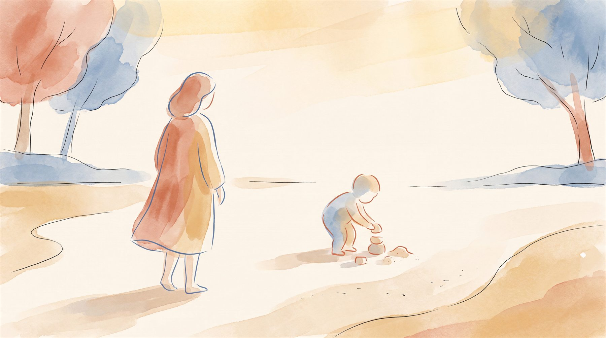

부모도 검사받나요?
— 부모 기질(TCI)·양육태도(PAT-2)로 보는 우리 집 궁합

아동·청소년 임상심리 전공
아이를 답답해하는 마음의 절반은 부모님의 타고난 기질에서 옵니다. 그래서 아이 검사만으로는 이야기가 절반에서 멈춰요. 부모님의 기질(TCI)과 양육태도(PAT-2)를 함께 보면, 아이와 나 사이의 거리가 눈에 보입니다. 그 거리를 아는 순간, 어디서부터 맞춰 가면 되는지도 잡히지요.
“분명 좋은 부모가 되고 싶은데, 아이 앞에만 서면 자꾸 욱합니다.” 상담실에서 부모님들께 자주 듣는 말입니다. 이럴 때 우리는 보통 아이부터 들여다봐요. 아이가 왜 저럴까, 어디가 문제일까 하고요. 그런데 아이를 답답해하는 그 마음의 절반은 부모님 자신의 타고난 성향에서 옵니다. 아이 검사지만 붙들고 있으면 이야기가 절반에서 멈추는 까닭이에요.
왜 부모도 검사를 받나요?
아이 검사는 아이가 어떤 성향을 타고났는지 알려줍니다. 하지만 그 아이가 매일 돌아오는 집의 분위기를 부모가 만든다는 사실은 검사지에 나오지 않아요. 같은 아이라도 어떤 집에서 자라느냐에 따라 전혀 다른 모습이 됩니다. 그 집의 분위기를 만드는 가장 큰 힘이 부모님의 양육 태도이고, 그 태도의 뿌리에는 부모님이 타고난 기질이 있습니다.
이 흐름을 한국 어머니들에게서 실제로 확인한 연구가 있어요. 박현진·문경주·권정혜·이주영(2010)이 만 3~6세 자녀를 둔 어머니 282명의 기질과 양육 태도를 함께 살펴봤는데요, 어머니의 자극추구·위험회피 성향이 높을수록 자녀의 기질과 상관없이 적대적이고 거부적인 양육이 강하게 나타났습니다. 아이 쪽만 봐서는 설명되지 않던 부분이, 부모 자신의 성향으로 옮겨 가서야 설명된 것이지요. 그래서 양육이 자꾸 같은 곳에서 걸린다면, 부모님 자신의 기질부터 살펴보는 편이 빠릅니다.
PAT-2 부모 양육태도검사란 무엇인가요?
PAT-2(Parental Attitude Test-2)는 부모가 자녀를 대하는 태도를 여덟 가지로 나누어 재는 표준화 검사입니다. 부모님이 직접 설문에 응답하고, 15~20분이면 끝나요. 나사렛대학교 임호찬 교수가 한국 부모·자녀를 대상으로 표준화했고, 2025년 인싸이트에서 부모양육태도검사 2판(PAT-2) 전문가 지침서가 출간되었습니다. 영아부터 고등학생 자녀를 둔 부모까지 여섯 연령대의 규준이 있어서, 아이의 발달 시기에 맞춰 볼 수 있어요. 부모가 응답한 결과와 자녀가 응답한 결과를 나란히 비교할 수 있다는 점도 강점입니다.
여덟 가지 태도는 이렇게 읽어요.
여덟 가지 중 일곱 가지는 과해도 문제, 부족해도 문제입니다. 그래서 아이에게 맞는 적절한 수준을 찾는 것이 핵심이에요. 딱 하나, 비일관성만은 낮을수록 좋습니다. 어제는 넘어간 행동을 오늘은 혼내는 식으로 기준이 흔들리면, 아이는 규칙 읽기를 포기하고 부모의 표정만 살피게 되거든요. 엄격한 집도 괜찮습니다. 기준이 일관되기만 하면요.
부모 기질(TCI)은 양육에 어떻게 나타나나요?
부모님의 양육 태도에는 뿌리가 있습니다. 타고난 성향이 일상 속 양육으로 자연스럽게 흘러나온 것이지요. 성인용 TCI도 아이 검사와 똑같이 네 가지 성향을 잽니다. 모험심(자극추구), 경계심(위험회피), 동료 의존도(사회적 민감성), 지구력(인내력)이에요. 어떤 성향이 강한지에 따라, 부모님이 자기도 모르게 손이 가는 양육 태도가 달라집니다.
이 흐름은 운명이 아닙니다. 성향은 방향만 알려줄 뿐, 그 방향으로 그대로 갈지 한 걸음 물러설지는 자기 성향을 얼마나 알아차리느냐에 달려 있어요. “내가 이래서 그랬구나” 하고 이해하는 순간, 자책이 줄고 조절할 여지가 생깁니다.
아이 기질과 부모 기질, 궁합은 어떻게 볼까요?
부모와 아이는 저마다 다른 성향을 타고납니다. 그래서 어떤 조합은 서로 잘 맞고, 어떤 조합은 자주 부딪혀요. 여기서 중요한 것은 둘 사이의 거리를 맞추는 일입니다. 궁합이 나쁘게 나와도 걱정할 일은 없어요. 거리를 알면 조절할 수 있거든요. 상담에서 자주 만나는 세 가지 궁합을 보여 드릴게요.
- 닮아서 증폭되는 궁합. 경계심 높은 부모와 경계심 높은 아이가 만나면, 부모의 불안과 아이의 불안이 서로를 키웁니다. 둘 다 “위험하지 않을까”를 먼저 떠올리니 집 전체가 조심스러워져요. 이때는 부모가 먼저 한 걸음 물러서서 아이가 스스로 해보도록 기다려 주는 연습이 필요합니다.
- 속도가 어긋나는 궁합. 모험심 강하고 겁 없는 부모와, 경계심 높아 신중한 아이. 부모는 “이렇게 재밌는데 왜?” 하며 다음 활동으로 넘어가고, 아이는 새 환경에 적응할 시간을 얻지 못한 채 지칩니다. 이 아이에게는 익숙해질 시간을 조금 더 주는 것만으로 달라져요.
- 답답함이 반항이 되는 궁합. 경계심 높은 부모와 모험심 강한 아이. 부모는 자꾸 붙잡고 싶고, 아이는 그 통제가 답답합니다. 붙잡을수록 거짓말이나 반항이 나오기 쉬워요.
부모와 아이 검사를 나란히 놓고 보면, 왜 어떤 순간엔 둘이 거울처럼 닮아 보이고 왜 어떤 순간엔 전혀 다른 언어를 쓰는 사람 같았는지가 드러납니다. 그 차이가 바로 거리를 좁힐 첫 실마리예요.
‘이상적인 점수’가 정답일까요?
많은 부모님이 검사지를 받아 들면 “몇 점이 정답이냐”부터 궁금해합니다. 그런데 여덟 가지 양육 태도에는 모든 아이에게 통하는 이상적인 점수가 없어요. 모험심이 강한 아이에게 맞는 감독의 정도와, 경계심이 높은 아이에게 맞는 감독의 정도가 서로 다르기 때문입니다. 같은 점수라도 어떤 아이에게는 알맞고 어떤 아이에게는 과합니다.
그래서 PAT-2 점수는 성적표처럼 읽지 않으셔도 됩니다. 낮은 점수 하나로 ‘나쁜 부모’가 되는 검사가 아니거든요. 점수는 내 양육의 특징을 객관적으로 비춰 줄 뿐이에요. “아, 내 양육이 이런 특징이 있었구나” 하고 아는 것, 그것이 변화의 절반입니다.
부모의 기질을 알면, 아이와의 거리가 보입니다. 그 거리는 부모님이 손댈 수 있는 영역이에요.
- 임호찬 (2025). 부모양육태도검사 2판(PAT-2) 전문가 지침서. 인싸이트.
- Cloninger, C. R., Svrakic, D. M., & Przybeck, T. R. (1993). A psychobiological model of temperament and character. Archives of General Psychiatry, 50(12), 975–990.
- 박현진, 문경주, 권정혜, 이주영 (2010). 자녀의 기질, 어머니의 기질 및 성격이 양육 태도에 미치는 영향. 한국심리학회지: 여성, 15(1), 25–44.
자주 묻는 질문
부모 검사는 성인용 TCI를 꼭 받아야 하나요?
PAT-2에서 점수가 나쁘게 나올까 걱정돼요.
부모와 아이 검사를 같이 하면 뭐가 좋나요?
결과지 한 장을, ‘우리 아이 설명서’ 한 권으로.
마음기록소는 아이의 기질·흥미와 부모님의 기질·양육을 임상심리전문가가 풀어, 아이 이름이 박힌 맞춤 책 한 권으로 만들어 드립니다.
받게 되는 결과물 보기 →